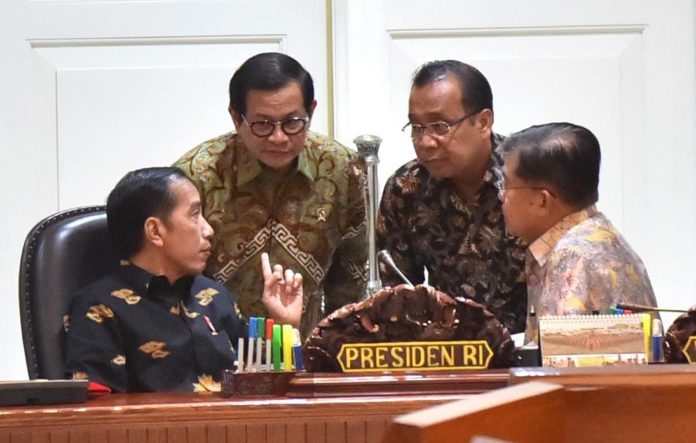
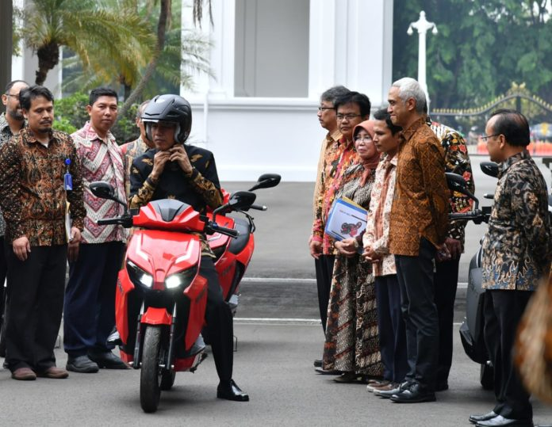
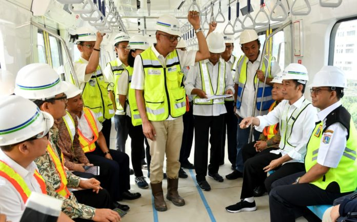

Berita Utama
Percepat Pembangunan Rumah Bagi ASN – Presiden Joko Widodo bersama dengan jajaran terkait hari ini menggelar rapat terbatas untuk membahas upaya penyediaan rumah bagi para ASN, TNI, dan Polri. Pembahasan tentang hal itu merupakan bagian dari upaya pemerintah untuk meningkatkan kinerja ASN dan pelayanan publik. “Kita akan konsentrasi pada upaya percepatan penyediaan rumah yang layak bagi 945 ribu ASN, 275 ribu prajurit TNI, dan 360 ribu anggota Polri,” kata Presiden dalam arahannya di Kantor Presiden, Jakarta, Rabu, 7 November 2018.

Saya Akan Jadi Pembeli Pertama Motor Listrik Gesits–Presiden Joko Widodo menerima audiensi tim gabungan yang mempersiapkan sepeda motor listrik Gesits pada Rabu pagi, 7 November 2018. Hadir dari Tim gabungan tersebut di antaranya, Menteri Riset, Teknologi dan Pendidikan Tinggi M Nasir, Rektor Institut Teknologi Sepuluh Nopember Joni Hermana, Rektor Institut Teknologi Bandung Kadarsyah Suryadi, Direktur PT. Gesits Technology Indonesia Zaki Nahdi Saleh, dan para pimpinan BUMN yang terlibat dalam produksi motor listrik tersebut, yakni Direktur Utama PT Wijaya Karya (Persero) Tbk. Tumiyana dan Direktur Utama PT LEN Industri (Persero) Zakky Gamal Yasin. Dalam pertemuan tersebut, Presiden yang didampingi Menteri Sekretaris Negara Pratikno, membicarakan persiapan produksi massal sepeda motor listrik Gesits yang merupakan karya anak bangsa. Rencananya, produk tersebut akan segera memasuki tahap produksi dan termasuk salah satu prinsipal Indonesia pertama yang masuk ke pasar sepeda motor listrik Tanah Air.

Presiden Jajal MRT dari HI Hingga Lebak Bulus–Presiden Joko Widodo pagi ini, Selasa, 6 November 2018, meninjau perkembangan proyek Mass Rapid Transit (MRT) Jakarta di Stasiun MRT Bundaran Hotel Indonesia (HI). Kedatangannya disambut oleh di antaranya Menteri Perhubungan Budi Karya Sumadi, Gubernur DKI Jakarta Anies Baswedan, dan Dirut PT MRT William Sabandar. Tiba di Stasiun MRT Bundaran HI sekira pukul 09.00 WIB, Presiden langsung menuju peron keberangkatan. Dari sana, Presiden bersama dengan rombongan menjajal moda transportasi terbaru di Jakarta itu dengan tujuan Depo MRT Lebak Bulu, Jakarta Selatan. Perjalanan Presiden dari Stasiun MRT Bundaran HI ke Depo MRT Lebak Bulus ditempuh dalam waktu kurang lebih 30 menit. Jumlah gerbong kereta yang saat itu dinaiki oleh Presiden adalah 6 gerbong dengan masing-masing berkapasitas 48 kursi, termasuk 6 kursi untuk ibu hamil dan lansia.

Prioritas
Refolusi
Perbaikan